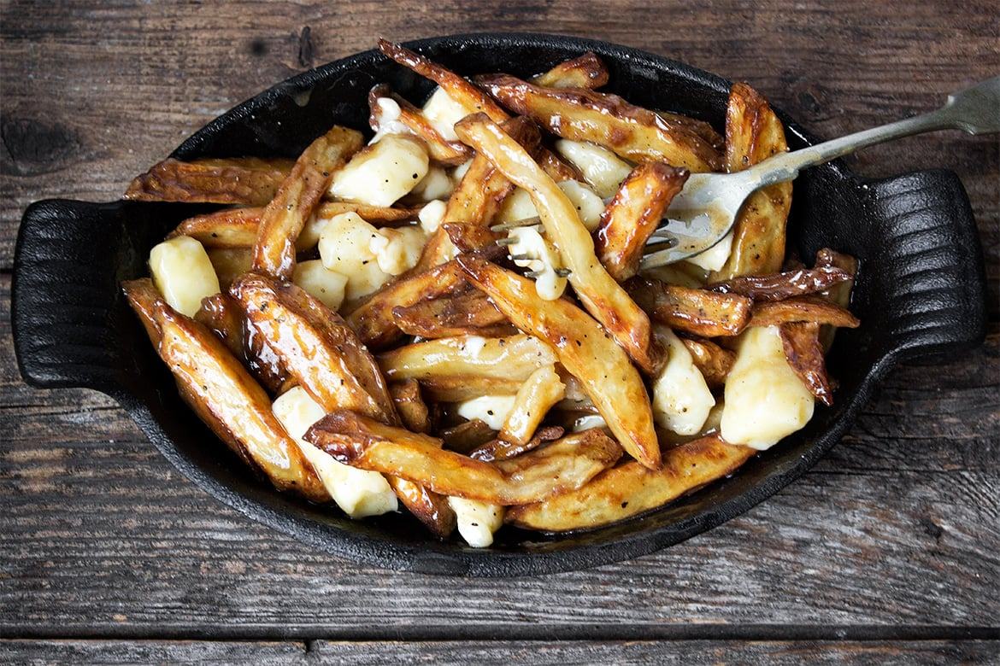
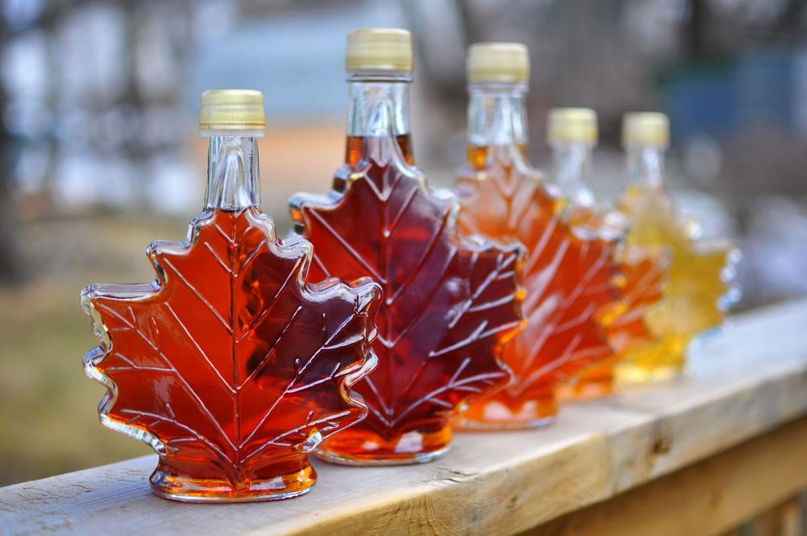
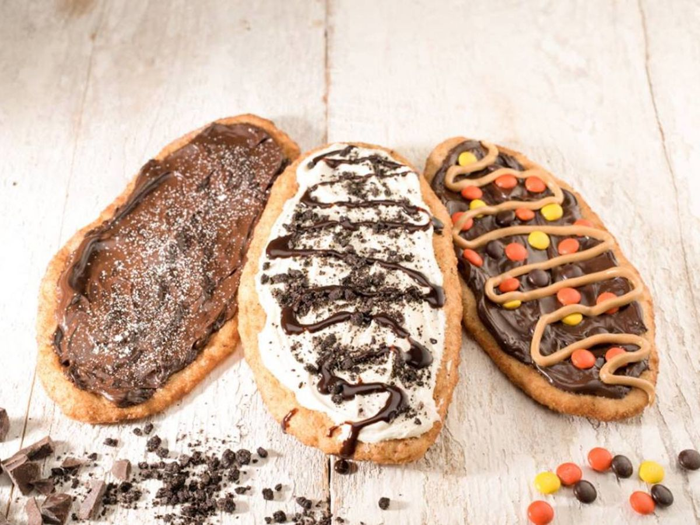
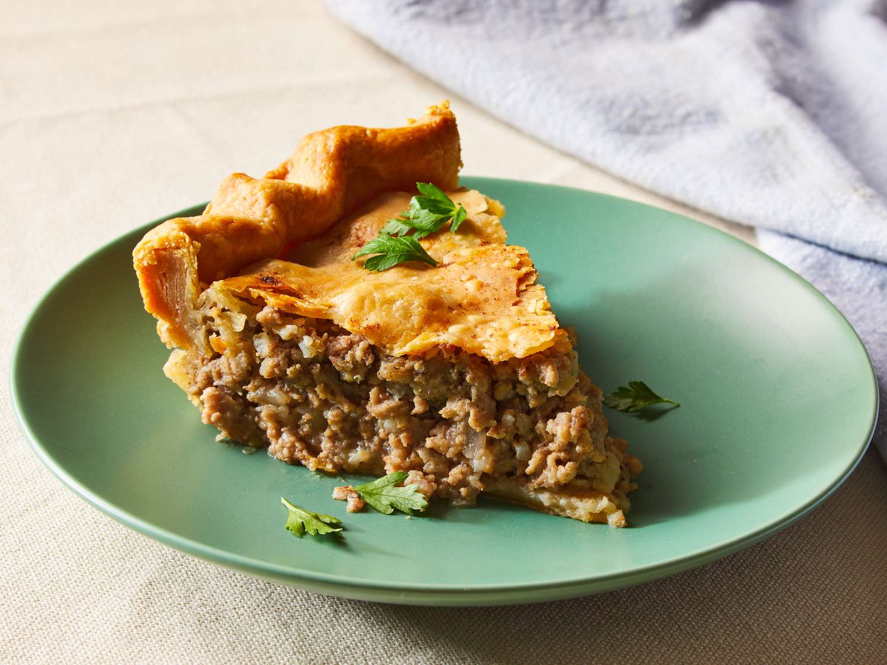
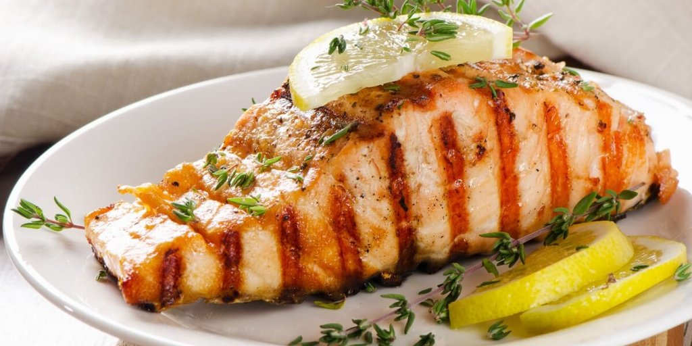

Canadá
Canadá
Culinária Canadense
A culinária canadense é resultado da mistura de diferentes culturas que ajudaram a construir a identidade do país ao longo dos séculos. Povos indígenas, franceses, britânicos e imigrantes de diversas partes do mundo contribuíram para criar sabores únicos e tradicionais.
Os pratos típicos variam bastante entre as regiões canadenses, utilizando ingredientes naturais como peixes, carnes, batatas, cereais e o famoso maple syrup.
Além de muito saborosa, a gastronomia do Canadá também representa a história e os costumes do povo canadense, sendo parte importante da cultura nacional.
Atualmente, turistas do mundo inteiro visitam o país para experimentar receitas tradicionais que se tornaram símbolos do Canadá.

Poutine
O Poutine é considerado o prato mais famoso do Canadá. A receita mistura batatas fritas crocantes, queijo coalho fresco e molho gravy quente.
O prato surgiu na província de Quebec durante a década de 1950 e rapidamente se espalhou por todo o país, tornando-se um símbolo da culinária canadense.
Atualmente, o Poutine é servido em restaurantes, lanchonetes e festivais gastronômicos, inclusive com versões gourmet e ingredientes variados.
Origem
O Poutine foi criado na região rural de Quebec. Acredita-se que clientes começaram a pedir batata frita misturada com queijo coalho, e depois o molho foi adicionado à receita.

Maple Syrup
O Maple Syrup é um tradicional xarope doce produzido a partir da seiva das árvores de bordo.
Muito utilizado em panquecas, waffles, sobremesas e bebidas, o ingrediente é um dos maiores símbolos gastronômicos do Canadá.
A maior parte da produção mundial acontece na província de Quebec, conhecida por suas extensas florestas de bordo.
Curiosidade
Povos indígenas canadenses já utilizavam a seiva das árvores muito antes da chegada dos europeus, sendo considerados os primeiros produtores do Maple Syrup.

BeaverTails
BeaverTails é uma famosa sobremesa canadense feita com massa frita alongada, lembrando o formato da cauda de um castor.
O doce se popularizou em Ottawa e hoje é encontrado em diversos pontos turísticos, festivais e estações de esqui do Canadá.
Existem várias versões da sobremesa, incluindo coberturas de chocolate, frutas, açúcar e canela.
Você sabia?
O castor é um dos animais símbolos do Canadá, o que ajudou o BeaverTails a se tornar uma sobremesa tão famosa no país.

Tourtière
Tourtière é uma tradicional torta salgada canadense, muito consumida durante o Natal e em reuniões familiares.
A receita geralmente é preparada com carne moída, cebola, temperos e massa assada.
O prato possui forte influência da culinária francesa, especialmente na província de Quebec.
História
A Tourtière começou a ganhar popularidade entre famílias franco-canadenses no século XIX, tornando-se um prato tradicional em festas e celebrações.

Salmão Canadense
O salmão é um alimento muito importante na culinária do Canadá, principalmente na região da Colúmbia Britânica.
O peixe pode ser preparado grelhado, defumado ou assado, sendo bastante consumido por moradores e turistas.
Povos indígenas da costa canadense utilizam o salmão em suas receitas tradicionais há centenas de anos.
Destaque
O Canadá é conhecido internacionalmente pela alta qualidade de seus peixes e frutos do mar.
Experiência Gastronômica Canadense
🍁 Maple Syrup
O Canadá é responsável pela maior produção de Maple Syrup do mundo, principalmente na região de Quebec.
🥔 Poutine
O Poutine é considerado um dos maiores símbolos gastronômicos canadenses e pode ser encontrado em praticamente todo o país.
🌎 Diversidade Cultural
A culinária canadense mistura influências indígenas, francesas, britânicas e de imigrantes do mundo inteiro.